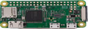
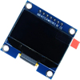
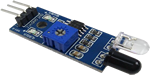
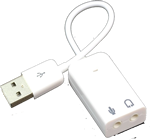
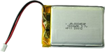
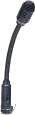

Donanım Modülü
Programlama dili C++, Platform: Linux Raspbian
Donanım için ilk karar verdiğimiz tasarımda donanımlarımız Arduino ,ESP8266 wifi modülü ve ses için
ise arduino için kullanılan ses modülü.Ancak bu seçimlerde hem ESP hemde Ses modülünde yaşadığımız
sorunlardan dolayı donanımlarımızı tamamen değiştirmek zorunda kaldık.
Bu modül kullanıcın kullandığı gözlüğün içersindeki modüllerle alakalıdır.Gözlüğün içerisine tüm parçaların sığması için olabildiğince küçük par.alar kullanılmıştır.
Kullandığımız Donanımları saymak gerekirse gözlük başına bir adet Raspberry pi 0 W, 1 adet 1.3" Oled
iki adet IR hareket sensörü ,bir adet ses kartı, açma kapama yapmak için switch ve bir adet de 1400Mah lik lipo pil .
Donanımların her biri gözlüğü yönetecek olan raspberry nin üzerindeki GPIO pinleri üzerine lehimlendi
ve bir birleri arasında da sorunsuz çalışması için kablolarda bantlandı.
| Donanım | Seçilme Sebebi |
|---|---|
|  | Server ile iletişimin Daha kolay ve güvenli olması ,ayrıca ses kayıt içinde kendiliğinden var olan kütüphanelerinin olması. |
|  | Ekrandaki Hasta bilgilerinin ekranı tam doldurması ve ekrana daha iyi yansıması . |
|  | Ekranlar arası geçişi daha hızlı algılamak ve hareletlere anında tepki vermesi . |
|  | Mikrafondan alınan sesi raspberry üzerine kayıt etmek için Aplay kütüphanesine uygun kullanılması. |
|  | Raspberry pi 0 ve yanındaki donanımları uzun süre çalıştırması için 1400 mAh seçilmiştir . |
|  | Raspberry pi 0 ve yanındaki donanımları uzun süre çalıştırması için 1400 mAh seçilmiştir . |